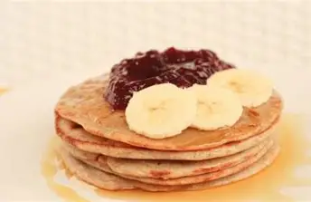

Pancakes de Avena y Semillas de Chía
Ingredientes
- 1 taza de avena molida
- 1 huevo
- 1/2 taza de leche
- 1 cucharada de semillas de chía
- 1 cucharadita de miel
- 1/2 cucharadita de polvo de hornear
Preparación
Mezcla todos los ingredientes hasta obtener una mezcla uniforme. Cocina pequeñas porciones en una sartén caliente y voltea cuando aparezcan burbujas.
⬅ Volver